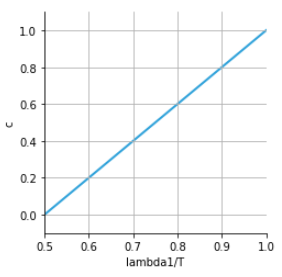
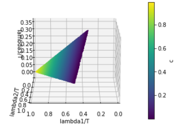

Structure tensors are used in computer vision to measure the local similarity of gradient directions within a 2D image or 3D volume. These matrices are typically summarized into a scalar metric called the local coherence. If the pixel (voxel) gradients within a 2D (3D) patch point more or less in the same direction, then the coherence at that pixel (voxel) is high (vice versa).
The notation in this post are mostly borrowed from the structure tensor Wikipedia article, which gives some background and simply states how coherence is calculated for 2D images. What it lacks is an extension of the metric to 3D volumes/videos and an explanation of why the metric is calculated the way it is, which we'll try to address here.Classical edge detection uses odd-sized kernels (Sobel, Scharr, etc.) to estimate the gradient of an image (a vector field). The technique relies on the assumption that pixel values change more rapidly across the edges of an object, leading to higher gradient magnitudes along an object's outline. Whereas the magnitude tells us where the edges are, the gradient direction tells us the orientation of the edges (recall gradients point in the direction of maximal change, i.e. perpendicular to an object's outline). It follows that coherence gives a measure of edge orientation uniformity within local patches, or how quickly objects move frame by frame in a video where the third axis is time.
One application of coherence is in the study of wave propagation. At the interface between two isotropic media, waves reflect about a line that is perpendicular to the interface and parallel to the direction of maximal change in the velocity at which waves propagate through each media. The coherence gives a measure of the local uniformity of this interface's orientation ("Is the line of reflection more or less pointing in the same direction?").
For a pixel $p=(x, y)$ from image $I(p)$, the 2D structure tensor
at that pixel is defined as
\begin{equation*}
S(p) = \begin{bmatrix}
\sum_{r\in\sup(w)} w(r) [I_x(p-r)]^2 & \sum_{r\in\sup(w)} w(r)
I_x(p-r)I_y(p-r) \\
\sum_{r\in\sup(w)} w(r) I_x(p-r)I_y(p-r) & \sum_{r\in\sup(w)}
w(r) [I_y(p-r)]^2
\end{bmatrix}
\end{equation*}
where $w(r)$ is a window function and $I_x, I_y$ are the partial
derivatives of $I$ in the $x$ and $y$ directions estimated by some
gradient estimator like central differencing. $r=(x, y)$ is a
position in the neighborhood around $p$ defined wherever $w(r)$ is
non-zero. Since we're dealing with images sampled at discrete
pixels, we omit the continuous version of the tensor for brevity.
Remark: The structure tensor is essentially a covariance
matrix on $m$ datapoints and $n$ variables, where $m$ is the size
of the neighborhood $|\sup(w)|$ and $n=2$. The only minor
difference is that we weigh each neighboring pixel via $w(r)$
instead of $1/m$.
From PCA we know that finding a new set
of orthogonal axes that maximizes the variance of the data involves
using a Lagrange multiplier and solving a subsequent eigenvalue
eigenvector problem on the covariance matrix. Since covariance
matrices are positive semi-definite, its two eigenvalues
$\lambda_1\geq\lambda_2$ will be non-negative and represent the
variance of the data along each new axis (PC1, PC2). If $\lambda_1
>> \lambda_2$ then the local gradients align along the first
principal component and the coherence should be high. If $\lambda_1
\approx \lambda_2$ then the local gradients have no dominant
direction and coherence should be low. Indeed, Wikipedia gives the
2D coherence formula as:
\begin{equation*}
c = \left(\frac{\lambda_1 - \lambda_2}{\lambda_1 +
\lambda_2}\right)^2
\end{equation*}

Total variance $T = \lambda_1 + \lambda_2$
The 3D structure tensor is a straightforward extension of the 2D.
We have pixel $p=(x,y,z)$ from image $I(p)$ and
\begin{equation*}
S(p) = \sum_{r\in\sup(w)} w(r) S_0(p-r)
\end{equation*}
where
\begin{equation*}
S_0 = \begin{bmatrix}
[I_x(p)]^2 & I_x(p)I_y(p) & I_x(p)I_z(p) \\
I_x(p)I_y(p) & [I_y(p)]^2 & I_y(p)I_z(p) \\
I_x(p)I_z(p) & I_y(p)I_z(p) & [I_z(p)]^2
\end{bmatrix}
\end{equation*}
If $\lambda_1 >> \lambda_2, \lambda_3$ then coherence should be
high ($\lambda_1 \approx \lambda_2 \approx \lambda_3$, low). A
plausible formula for 3D coherence is:
\begin{equation*}
c = \left(\frac{\lambda_1 - (\lambda_2 + \lambda_3)}{
\lambda_1 + \lambda_2 + \lambda_3}\right)^2
\end{equation*}

These are the contraints used to generate the plot above.
Contraint on $\lambda_1$: $1/3 \leq \lambda_1/T \leq 1$
Contraints on $\lambda_2$:
$\quad$The variance explained by PC2 and PC3 is $1-\lambda_1/T$.
Since $\lambda_1 \geq \lambda_2 \geq \lambda_3$ by definition and
$\lambda_1 + \lambda_2 + \lambda_3 = T$,
$\quad$we have a lower bound on $\lambda_2$:
$\quad\lambda_2/T \geq (1-\lambda_1/T)/2$
$\quad$For the upper bound, we have two inequalities that must be
satisfied. First we have $\lambda_2/T \leq \lambda_1/T$ coming from
$\quad\lambda_1 \geq \lambda_2 \geq \lambda_3$. Second we have
$\lambda_1/T+\lambda_2/T+\lambda_3/T=1$ so $\lambda_1/T +
\lambda_2/T \leq 1$, or
$\quad\lambda_2/T \leq -\lambda_1/T + 1$. Combining these two we
have $\lambda_2 \leq \min(\lambda_1/T, -\lambda_1/T + 1)$.
Finally $\lambda_3/T = 1 - \lambda_1/T - \lambda_2/T$.